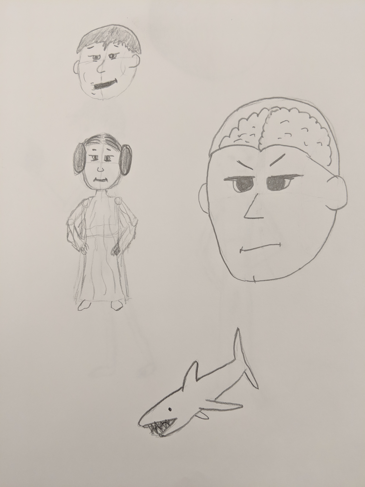
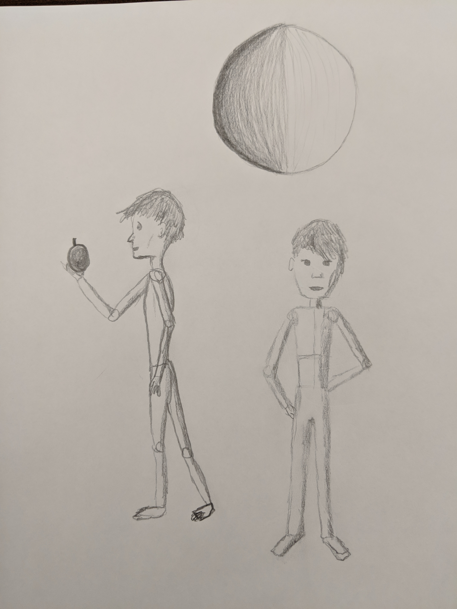
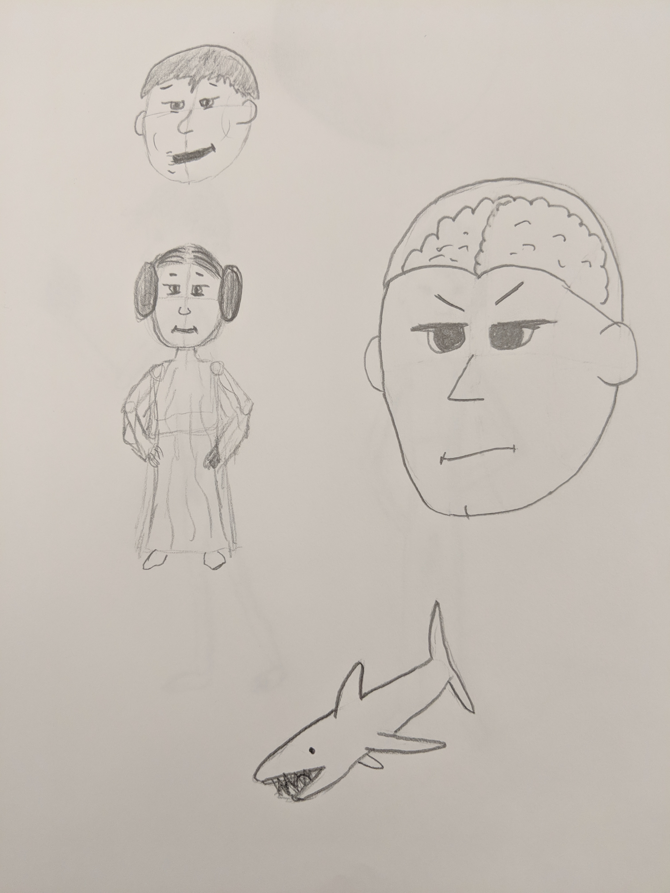
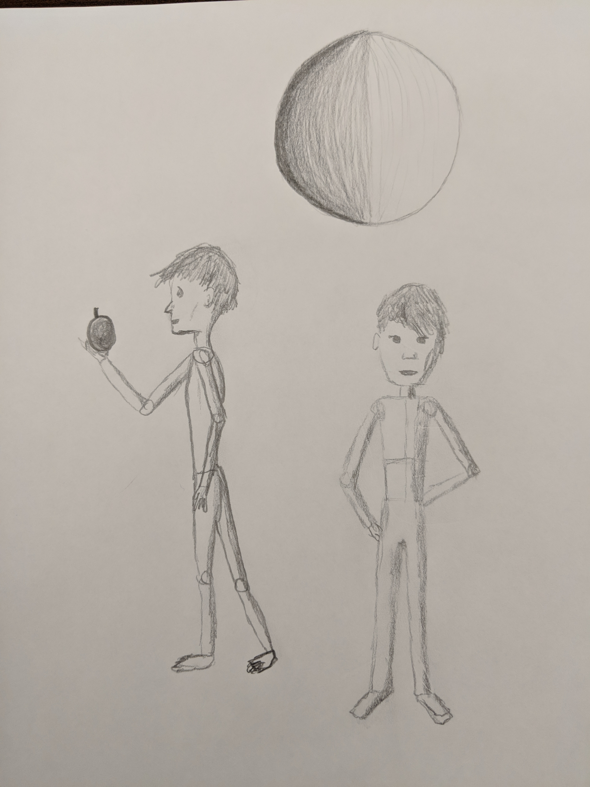

My next and final technology project is drawing. I have never been very good at drawing, but I've also never taken a formal course or really worked at improving. I believe that I can achieve demonstrable improvement and progress in terms of my drawing ability by following a set course called "Learn to Draw" by Schaefer Art. This is a 23-part video series on YouTube that I'll use to guide my drawing lessons. In addition to noticeable improvement, my stretch goal is to complete the 23-part course.
My materials are the following:
In case you're wondering, no, Staedtler is not sponsoring this project. All of those materials came in a pack.
I will take a picture and document my daily progress in a Google Photos album that is accessible to anyone that has the link. I'll also document a selection of pictures of drawings here in this blog.
The first several video tutorials focused on the basics of sketching—instead of overcommitting to a line or shape, making small, light lines to "find" the shape, even when drawing something as simple as a circle or a square. Then the instructor moved on to shading and cross-hatching, which is shading by making small lines that are perpendicular to the contour of a shape to make the edge more noticeable.
Then he moved on to perspective, in which he placed one or two points on the horizon and then used the angles leading to as boundaries to give shapes perspective. He discussed the rule of thirds, in which points of interest should be drawn on the intersections of lines that separate the page into thirds horizontally and vertically. While most of these concepts were not entirely new to me, I found that I sketched much better when being extremely deliberate about following the principles. Even when the instructor himself wants to illustrate a hasty demonstration, it looks pretty terrible. This showed me that attention to detail and process is what is important when drawing, not some sort of intuitive or innate talent that an artist just slaps onto a page.


This week, my online video course finished up fundaments of drawing objects and moved on to figure drawing, which I'm very interested in. One reason I wanted to improve in sketching was so that I could more confidently sketch mockups of UX designs, and simple lessons and attention to detail and proportion have definitely done that for me. But it would also be nice to be able to sketch little characters and figures for things like artboards and characters that can be used for user journeys, making them a bit more compelling and attractive.
Figure drawing seems easy on the surface. Each body part is broken down into parts that are easy to draw, like rectangles, circles, and cylinders. The problem is drawing the figures in different positions, because the joints don't move mechanically. Apparently, the torso works kind of like an accordion, while the chest will always retain the same shape. This seems obvious in hindsight and very intuitive, but it has to be deliberately considered when drawing a figure in a crouch, or one that's twisting its body to change direction. You can see from my excerpts from this week that I was experimenting with different shoulder variations, particularly when arms are raised.


This week, I started the cartoon lessons of the drawing course, focusing on simple characters in different profile angles and some varying postures. I think drawing simple characters in general will be useful for things like creating a journey map or user personas as a researcher and designer. Depicting a user as a character can help build empathy for designers and literally and figuratively illustrate how the user is feeling or perceiving a product based on the research.
As for my learning process, I'm finding it very helpful to watch the beginning of the lessons to get the figure or character sketched out. Then I focus more on what I'm drawing and simply listen to the instructor as he describes what he's doing and why. Often I've come to the end and seen that what I've drawn, although basically the same thing, looks very different in terms of proportion, the expression on the character's face, or their posture. I believe this is allowing me to accommodate what I'm learning in order to create a new mental model of the process of drawing. Rather than drawing a simple outline with a pen and then being disappointed that it doesn't look good, I'm internalizing that the basic shape is sketched, the contours are marked, and then the character is drawn over that and iterated upon until it looks good (or at least acceptable). Obviously I could be told this over and over again, but until I've actually undertaken the process and adopted it myself, I would never be able to do it consistently or effectively.
On one hand, I've gained a better mental model by practicing and exploring what works rather than studying or observing. On the other hand, without direction I don't think I would have made progress quickly enough to maintain my interest and resolve to continue learning and exploring. It's also important to note that drawing, as an activity that is practiced- and skill-based rather than knowledge-based, naturally lends itself to constructionist pedagogy. One thing in particular that has been very helpful is maintaining a growth mindset, particularly because I considered myself a pretty poor visual artist. It's clear to me now that this was a result of my having no process nor patience when it came to drawing. Seeing that even very skilled artists must be deliberate and patient when they draw made me realize the importance of process. No one sits down and draws a perfect cartoon character or figure the first time with hard, bold lines. They sketch light pencil lines and erase constantly to "find" the shape and allow themselves to experiment and make mistakes. It's a very constructivist learning process in which the student explores and sees what works, and remembers what worked before. I'm convinced that drawing and sketching are not abilities that people are born with, but skills that are developed with a lot of practice, aided by a steady hand, persistence, and attention to detail.
The following are my sketches and drawings from this week:


For the final week, I drew characters, faces, and figures freely, focusing on practicing the techniques that I had learned through the lessons. I didn't expect to necessarily develop my own personal style within a matter of hours, but I wanted to experiment with varying levels of detail. I followed a process instead of just copying the subject of the lesson as exactly as I could, but I still relied on the process that was presented in those tutorials. I first drew the outline of the head, drew a cross-shape to orient the angle of the face, and then drew in the features. From there, I drew the neck, torso, legs, and arms. I experimented with the facial features and the poses of the figures.
As a result, I believe that my sketches this week are a little less polished or professional because I wasn't taking cues from the lessons. I hoped to create a constructivist relation between the ideas and my own experience and skill by playing with the techniques I had learned and attemptingthem on my own, drawing different facial features and hair, and even attempting to draw people from real life (two of them, if you want to try to guess). In the future, I believe the process that I have learned will help me draw more compelling sketches and wireframes because I will be more deliberate and patient with my drawings. Instead of adopting a mindset in which I believe I am just bad at drawing, I will maintain a growth mindset that I would improve with practice and while I may not keep practicing consistently, I will continue to trust the process and improve all of my future sketches and drawings.
The following are my sketches and drawings from this week:
 


